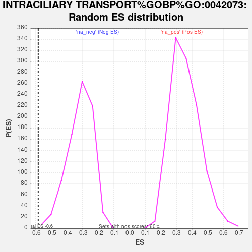

Profile of the Running ES Score & Positions of GeneSet Members on the Rank Ordered List
| Dataset | NHBE_SARSCoV2_ranks |
| Phenotype | NoPhenotypeAvailable |
| Upregulated in class | na_neg |
| GeneSet | INTRACILIARY TRANSPORT%GOBP%GO:0042073 |
| Enrichment Score (ES) | -0.58250296 |
| Normalized Enrichment Score (NES) | -1.8455704 |
| Nominal p-value | 0.0025062656 |
| FDR q-value | 0.25120714 |
| FWER p-Value | 0.888 |
| SYMBOL | RANK IN GENE LIST | RANK METRIC SCORE | RUNNING ES | CORE ENRICHMENT | |
|---|---|---|---|---|---|
| 1 | DYNLL1 | 2051 | 0.792 | -0.1337 | No |
| 2 | IFT122 | 2349 | 0.687 | -0.1262 | No |
| 3 | IFT43 | 2959 | 0.506 | -0.1532 | No |
| 4 | WDPCP | 3281 | 0.435 | -0.1595 | No |
| 5 | IFT20 | 4797 | 0.166 | -0.2779 | No |
| 6 | KIF3B | 4997 | 0.138 | -0.2880 | No |
| 7 | IFT57 | 5214 | 0.105 | -0.3011 | No |
| 8 | DYNC2LI1 | 6004 | 0.004 | -0.3666 | No |
| 9 | TRAF3IP1 | 6256 | -0.025 | -0.3863 | No |
| 10 | IFT140 | 6380 | -0.040 | -0.3947 | No |
| 11 | TTC21A | 6654 | -0.074 | -0.4139 | No |
| 12 | RABL2B | 6677 | -0.078 | -0.4121 | No |
| 13 | CLUAP1 | 7580 | -0.203 | -0.4777 | No |
| 14 | IFT46 | 7905 | -0.258 | -0.4926 | No |
| 15 | IFT52 | 8113 | -0.298 | -0.4959 | No |
| 16 | IFT27 | 8297 | -0.336 | -0.4954 | No |
| 17 | WDR19 | 8311 | -0.339 | -0.4806 | No |
| 18 | FUZ | 8374 | -0.352 | -0.4692 | No |
| 19 | INTU | 8445 | -0.366 | -0.4579 | No |
| 20 | IFT88 | 9942 | -0.754 | -0.5472 | Yes |
| 21 | IFT81 | 10269 | -0.882 | -0.5330 | Yes |
| 22 | RPGR | 10564 | -1.004 | -0.5104 | Yes |
| 23 | TTC21B | 10677 | -1.053 | -0.4704 | Yes |
| 24 | WDR35 | 10702 | -1.070 | -0.4222 | Yes |
| 25 | IFT172 | 10748 | -1.093 | -0.3747 | Yes |
| 26 | IFT80 | 10896 | -1.174 | -0.3320 | Yes |
| 27 | DYNC2H1 | 11161 | -1.330 | -0.2916 | Yes |
| 28 | IFT74 | 11289 | -1.437 | -0.2348 | Yes |
| 29 | SSX2IP | 11551 | -1.704 | -0.1766 | Yes |
| 30 | PCM1 | 11574 | -1.741 | -0.0969 | Yes |
| 31 | LCA5 | 11951 | -2.889 | 0.0072 | Yes |
